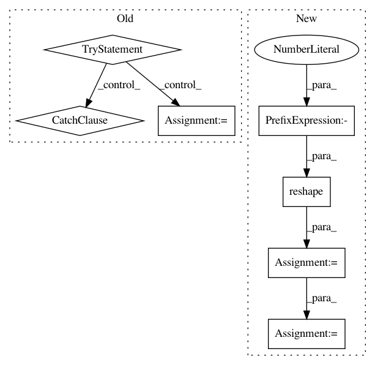

68fe96add85bd842df23569dde490e1694d256fe,cleverhans/model_zoo/deep_k_nearest_neighbors/dknn.py,DkNNModel,find_train_knns,#DkNNModel#Any#,134
Before Change
for i in range(data_activations_layer.shape[0]):
query_res = self.query_objects[layer].find_k_nearest_neighbors(
data_activations_layer[i], self.neighbors)
try:
knns_ind[layer][i, :] = query_res
except: // pylint: disable-msg=W0702
knns_ind[layer][i, :len(query_res)] = query_res
knn_errors += knns_ind[layer].shape[1] - len(query_res)
// Find labels of neighbors found in the training data.
knns_labels[layer] = np.zeros((nb_data, self.neighbors), dtype=np.int32)
for data_id in range(nb_data):
knns_labels[layer][data_id, :] = self.train_labels[knns_ind[layer][data_id]]
After Change
data_activations_layer, self.neighbors
)
d1 = neighbor_index.reshape(-1)
m1 = d1 == -1
knns_ind[layer].reshape(-1)[
numpy.logical_not(m1)
] = d1[
In pattern: SUPERPATTERN
Frequency: 3
Non-data size: 7
Instances
Project Name: tensorflow/cleverhans
Commit Name: 68fe96add85bd842df23569dde490e1694d256fe
Time: 2019-06-21
Author: siarheisiniak@yahoo.com
File Name: cleverhans/model_zoo/deep_k_nearest_neighbors/dknn.py
Class Name: DkNNModel
Method Name: find_train_knns
Project Name: SpiNNakerManchester/sPyNNaker
Commit Name: 148f63289a3fb4b809d6b5d63feaddf3e64bed26
Time: 2018-03-01
Author: andrew.gait@manchester.ac.uk
File Name: spynnaker/pyNN/models/neural_projections/connectors/multapse_connector.py
Class Name: MultapseConnector
Method Name: create_synaptic_block
Project Name: yahoo/TensorFlowOnSpark
Commit Name: 981e4266d4ea816b08a762193bd52f40cd1a3242
Time: 2019-08-07
Author: leewyang@verizonmedia.com
File Name: examples/mnist/keras/mnist_inference.py
Class Name:
Method Name: inference